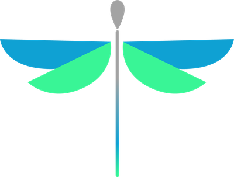
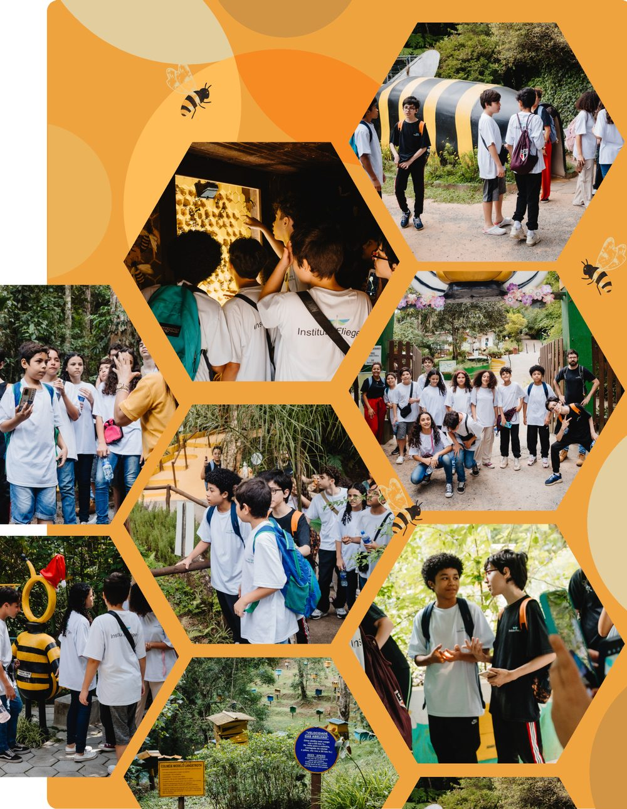
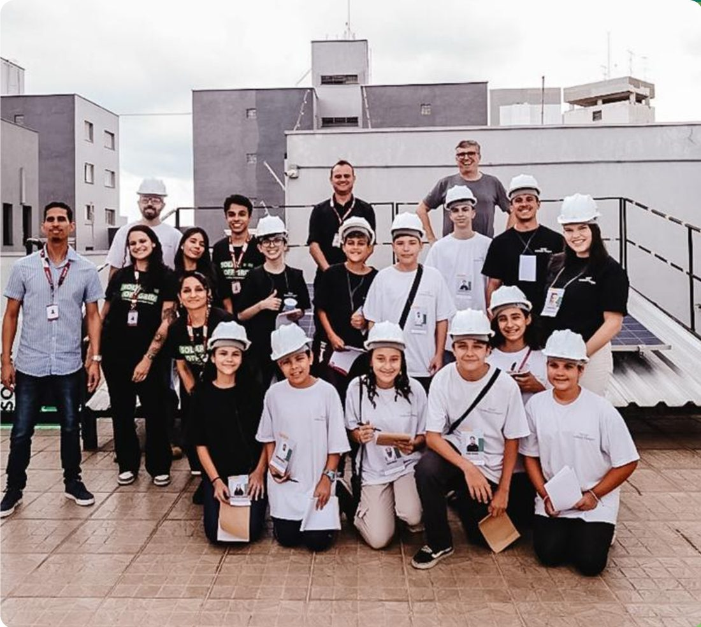
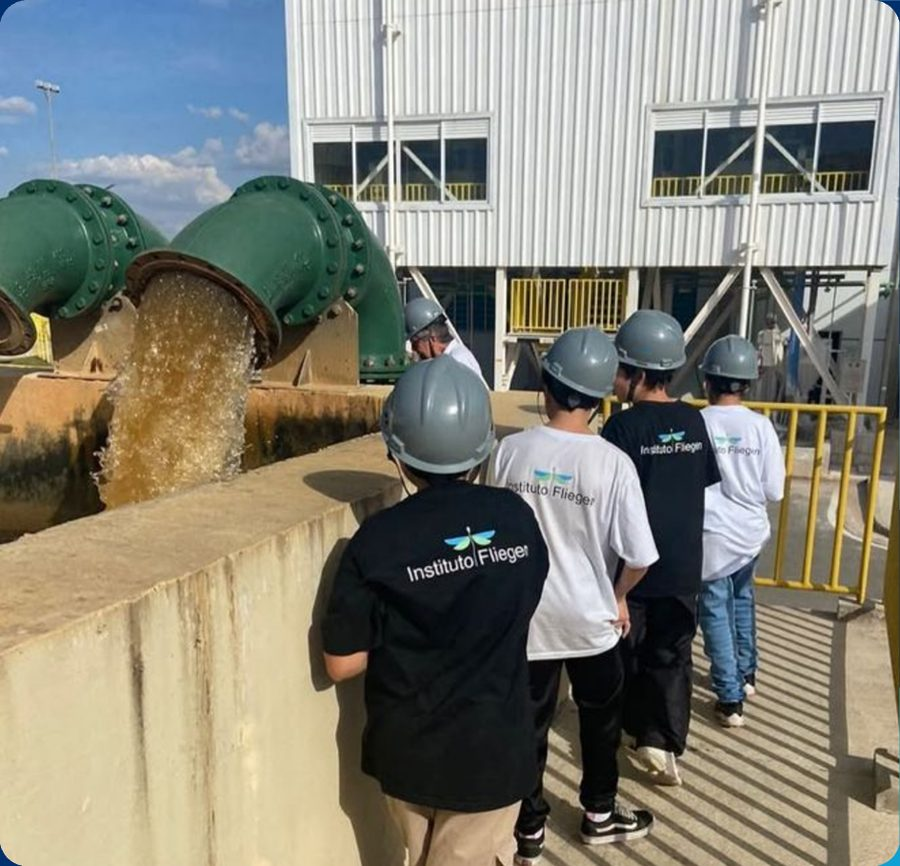
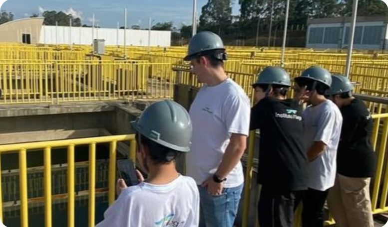
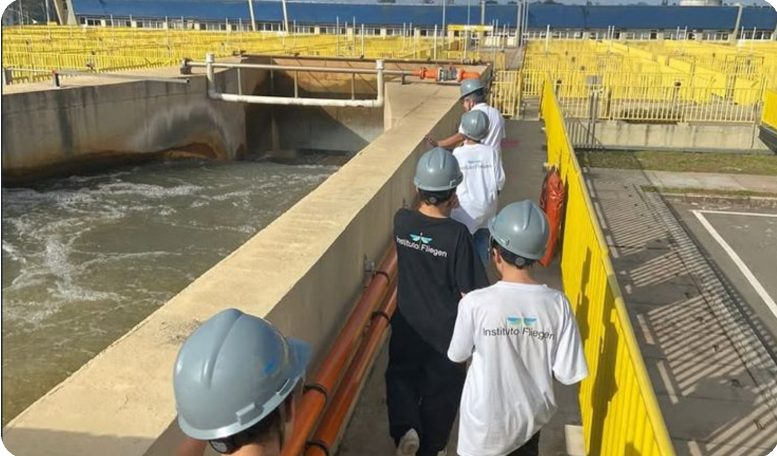
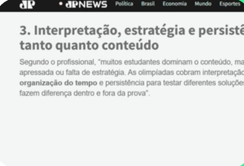
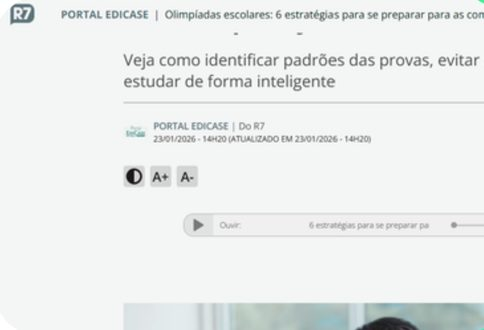
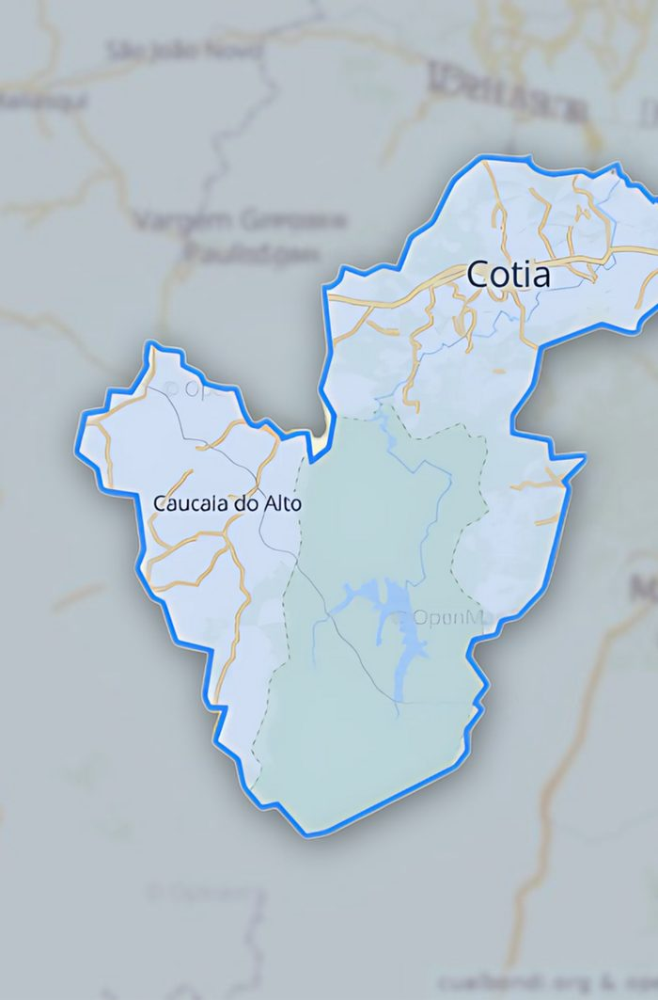

Estimular
Promover a aprendizagem por meio de desafios acadêmicos, fortalecendo o raciocínio lógico e ampliando o desenvolvimento educacional dos alunos.

Um projeto educacional social, sem fins lucrativos, que prepara estudantes de escolas públicas de Cotia e região para as Olimpíadas do Conhecimento e para voos cada vez mais altos.
Quem somos
O Instituto Fliegen é um projeto educacional social, sem fins lucrativos, criado para preparar estudantes para as Olimpíadas do Conhecimento, como OBMEP, OBA, Canguru, entre outras competições acadêmicas de destaque no país.
Nosso foco é desenvolver habilidades cognitivas, pensamento crítico, autonomia intelectual e confiança, estimulando a curiosidade científica e o raciocínio lógico. Acreditamos que o contato com desafios acadêmicos fortalece a formação dos alunos e amplia suas possibilidades de futuro.
O nome “Fliegen” significa “voar” em alemão, simbolizando a aspiração de ver esses estudantes superarem seus limites e alcançarem grandes conquistas.
Nossos objetivos
Promover a aprendizagem por meio de desafios acadêmicos, fortalecendo o raciocínio lógico e ampliando o desenvolvimento educacional dos alunos.
Capacitar estudantes para participação em Olimpíadas do Conhecimento, desenvolvendo desempenho, disciplina e excelência acadêmica.
Guiar os alunos na construção de um percurso acadêmico sólido, preparando-os para o ensino superior e para o ambiente profissional.
Fomentar um ambiente colaborativo que valoriza o trabalho em equipe, o respeito e a troca de conhecimento.
O que propomos
Um projeto de enriquecimento extracurricular, com foco em:
OBMEP, OBA, OIMC, OBT e outras competições.
Ciência, Tecnologia, Engenharia, Artes e Matemática.
Robótica, astronomia e outras atividades científicas.
Estudantes de escolas públicas ou bolsistas (mínimo 50%) em escolas particulares, alunos do 6º ano ao Ensino Médio, ampliando o acesso a oportunidades acadêmicas de alto nível.
Benefícios
Como entrar
A seleção acontece em quatro etapas. A primeira é feita on-line, pelo link de inscrição.
Prova com 10 questões de matemática e 10 de português, pelo link fliegen.alphalumen.org.br
Os melhores resultados avançam para a prova presencial no Instituto Fliegen.
Atividade de 1h30 conduzida pela psicóloga Gabriella Gigliotti (CRP 06/165856).
Validação socioeconômica com a assistente social.
Nossa trajetória
Criação do projeto
1ª aula do Instituto Fliegen
2 primeiras medalhas: prata e bronze na OBA
1ª medalha de honra ao mérito na prova Canguru de Matemática
14 de 18 alunos passaram para a segunda fase da OBRL
1 aluno selecionado para a Seleção Internacional da OBA
6 participantes · 1 prata e 1 bronze (33,3%)
8 participantes · 4 avançaram para a segunda fase
8 participantes · 1 prata e 2 bronzes, e todos avançaram de fase (37,5%)
8 participantes · 1 prata, 2 bronzes e 3 honras ao mérito (75%)
Ambas avançaram para a segunda fase
Além das competições
O Instituto Fliegen oferece aos estudantes experiências transformadoras, incluindo oficinas, eventos e passeios educativos.
Instituto Alpha Lumen: planetário, museus, laboratórios e palestras.
Organizado e disputado pelos estudantes.
Ver a área de xadrez →Filme Perfekta – Uma Aventura da Escola de Gênios.
Oficina de fotografia com Pedro Ivo Prates.
Projeto Social de Robótica & Matemática: estudantes como monitores na Escola Jardim do Engenho.
Participação no evento Nutella Day.

Passeio educativoBiologia na prática
Visita educativa sobre a importância das abelhas na polinização e no equilíbrio ambiental. As crianças aprenderam sobre biologia, ecossistemas e preservação ambiental de forma divertida.

Visita técnicaTecnologia que transforma o futuro
Os alunos do Instituto Fliegen participaram de uma visita à Intelbras, empresa referência em tecnologia e inovação no Brasil.

Visita técnicaEstação de Tratamento de Água
Visita educativa para compreender como funciona o tratamento e a distribuição da água que chega às nossas casas.


Xadrez Fliegen
O xadrez treina concentração, planejamento e raciocínio lógico, as mesmas habilidades das olimpíadas. Na nossa área de xadrez, qualquer aluno aprende com aulas práticas, passo a passo, e depois treina com problemas e partidas. Gratuito, sem cadastro e feito para o celular.
As peças, capturar e defender, xeque e xeque-mate, roque, en passant, garfo e cravada. Cada aula tem exercícios curtos no tabuleiro.
Imprensa
Reconhecido nacionalmente, o Instituto Fliegen se destaca pela atuação educacional e pelo incentivo à participação de estudantes em Olimpíadas do Conhecimento, gerando impacto positivo na formação de crianças e jovens.
Um dos jornais mais tradicionais do país destacou estratégias educacionais voltadas à preparação de estudantes para competições escolares, alinhadas à proposta do Instituto Fliegen.
Portal de notícias de alcance nacional, o Terra destacou estratégias educacionais e iniciativas voltadas ao desempenho escolar e ao desenvolvimento intelectual de estudantes.

Veículo de grande alcance nacional, a Jovem Pan destacou a importância do preparo acadêmico e do estímulo educacional, dando visibilidade a práticas alinhadas ao trabalho do Instituto Fliegen.

Ligado ao Grupo Record, o R7 abordou a preparação para olimpíadas escolares, reforçando a importância de projetos educacionais estruturados e de impacto social.

Onde atuamos
Atendemos estudantes de Cotia e região, na Grande São Paulo.
Material institucional
Baixe a apresentação institucional com nossa proposta, o processo seletivo, as conquistas de 2024 e 2025, as oficinas e passeios e a presença na mídia. Ideal para compartilhar com escolas, famílias e apoiadores.